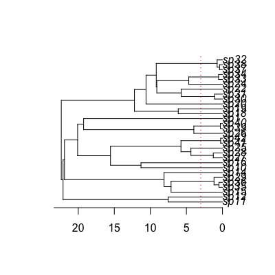

make.musse.td(tree, states, k, n.epoch, sampling.f=NULL, strict=TRUE, control=list())make.musse.t(tree, states, k, functions, sampling.f=NULL, strict=TRUE, control=list(), truncate=FALSE, spline.data=NULL)
ape “phylo” format.k. This vector must have names that
correspond to the tip labels in the phylogenetic tree
(tree$tip.label). For tips corresponding to unresolved
clades, the state should be NA.k where sampling.f[i]
is the proportion of species in state i that are present in
the phylogeny. A value of c(0.5, 0.75, 1) means that half of
species in state 1, three quarters of species in state 2, and all
species in state 3 are included in the phylogeny. By default all
species are assumed to be knownstates vector is always checked to make sure
that the values are integers on 1:k. If strict is
TRUE (the default), then the additional check is made that
every state is present. The likelihood models tend to be
poorly behaved where states are missing, but there are cases
(missing intermediate states for meristic characters) where allowing
such models may be useful.make.bisse.Create a likelihood function for a MuSSE model where different chunks of time have different parameters. This code is experimental!
Please see make.bisse.t for further details.
## Here we will start with the tree and three-state character set from ## the make.musse example. This is a poorly contrived example. pars <- c(.1, .15, .2, # lambda 1, 2, 3 .03, .045, .06, # mu 1, 2, 3 .05, 0, # q12, q13 .05, .05, # q21, q23 0, .05) # q31, q32 set.seed(2) phy <- tree.musse(pars, 30, x0=1) ## Suppose we want to see if diversification is different in the most ## recent 3 time units, compared with the rest of the tree (yes, this is ## a totally contrived example!): plot(phy)axisPhylo()abline(v=max(branching.times(phy)) - 3, col="red", lty=3)
## For comparison, make a plain MuSSE likelihood function lik.m <- make.musse(phy, phy$tip.state, 3) ## Create the time-dependent likelihood function. The final argument ## here is the number of 'epochs' that are allowed. Two epochs is one ## switch point. lik.t <- make.musse.td(phy, phy$tip.state, 3, 2) ## The switch point is the first argument. The remaining 12 parameters ## are the MuSSE parameters, with the first 6 being the most recent ## epoch. argnames(lik.t)[1] "t.1" "lambda1.1" "lambda2.1" "lambda3.1" "mu1.1" "mu2.1" [7] "mu3.1" "q12.1" "q13.1" "q21.1" "q23.1" "q31.1" [13] "q32.1" "lambda1.2" "lambda2.2" "lambda3.2" "mu1.2" "mu2.2" [19] "mu3.2" "q12.2" "q13.2" "q21.2" "q23.2" "q31.2" [25] "q32.2"pars.t <- c(3, pars, pars) names(pars.t) <- argnames(lik.t) ## Calculations are identical to a reasonable tolerance: lik.m(pars) - lik.t(pars.t)[1] 2.505392e-08## It will often be useful to constrain the time as a fixed quantity. lik.t2 <- constrain(lik.t, t.1 ~ 3) ## Parameter estimation under maximum likelihood. This is marked "don't ## run" because the time-dependent fit takes a few minutes. ## <strong>Not run</strong>: # ## Fit the MuSSE ML model # fit.m <- find.mle(lik.m, pars) # # ## And fit the MuSSE/td model # fit.t <- find.mle(lik.t2, pars.t[argnames(lik.t2)], # control=list(maxit=20000)) # # ## Compare these two fits with a likelihood ratio test (lik.t2 is nested # ## within lik.m) # anova(fit.m, td=fit.t) # ## <strong>End(Not run)</strong>